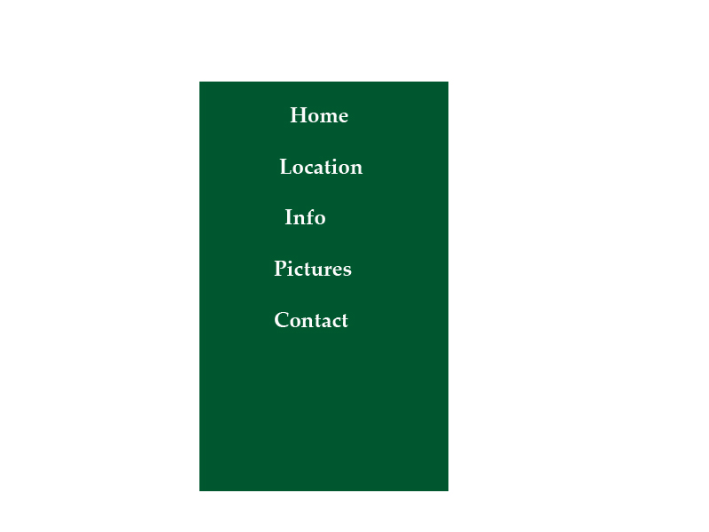

Los Angeles Info
Los Angeles (/lɒs ˈændʒələs/ ( listen);[15] Spanish for "The Angels"; Spanish pronunciation: [los ˈaŋxeles]), officially the City of Los Angeles and often known by its initials L.A., is the cultural, financial, and commercial center of Southern California. With a U.S. Census-estimated 2016 population of 3,976,322,[16] it is the second most populous city in the United States (after New York City) and the most populous city in the state of California. Located in a large coastal basin surrounded on three sides by mountains reaching up to and over 10,000 feet (3,000 m), Los Angeles covers an area of about 469 square miles (1,210 km2).[17] The city is also the seat of Los Angeles County, the most populated county in the country. Los Angeles is the center of the Los Angeles metropolitan area, with 13,131,431 residents,[18] and is part of the larger designated Los Angeles-Long Beach combined statistical area (CSA), the second most populous in the nation with a 2015 estimated population of 18.7 million.[19]
listen);[15] Spanish for "The Angels"; Spanish pronunciation: [los ˈaŋxeles]), officially the City of Los Angeles and often known by its initials L.A., is the cultural, financial, and commercial center of Southern California. With a U.S. Census-estimated 2016 population of 3,976,322,[16] it is the second most populous city in the United States (after New York City) and the most populous city in the state of California. Located in a large coastal basin surrounded on three sides by mountains reaching up to and over 10,000 feet (3,000 m), Los Angeles covers an area of about 469 square miles (1,210 km2).[17] The city is also the seat of Los Angeles County, the most populated county in the country. Los Angeles is the center of the Los Angeles metropolitan area, with 13,131,431 residents,[18] and is part of the larger designated Los Angeles-Long Beach combined statistical area (CSA), the second most populous in the nation with a 2015 estimated population of 18.7 million.[19]
